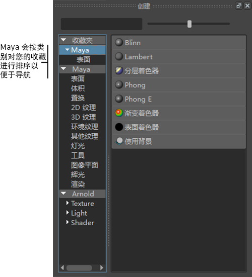

可以通过创建收藏列表来自定义“创建”(Create)选项卡。可用于轻松访问最常用的着色器。
创建收藏夹（方法 1）
- 在“Hypershade”中，用鼠标中键将着色器拖动到“创建”(Create)选项卡中的“收藏夹”(Favorites)，以将着色器添加到“收藏夹”(Favorites)列表。
创建收藏夹（方法 2）
- 在“Hypershade”中，在着色器上单击鼠标右键，然后选择“添加到收藏夹”(Add to favorites)。
“Hypershade”将收藏按类别进行排序，以便轻松地找到着色器。

注： 通过“创建渲染节点”(Create Render Node)窗口和“指定新材质”(Assign New Material)窗口，也可以创建“收藏夹”(Favorites)列表。“创建渲染节点”(Create Render Node)窗口和“指定新材质”(Assign New Material)窗口具有与 Hypershade
“创建”(Create)选项卡相同的功能。在“Hypershade”中创建的任何“收藏夹”(Favorites)列表，也可以显示在另外两个窗口中，反之亦然。
使用收藏夹（方法 1）
- 选择一个或多个对象，单击鼠标右键，然后选择“指定收藏材质”(Assign Favorite Material)。
从“收藏夹”(Favorites)列表的材质中进行选择。
使用收藏夹（方法 2）
- 选择对象，然后选择“照明/着色 > 指定收藏材质”(Lighting/Shading > Assign Favorite Material)。
从“收藏夹”(Favorites)列表的材质中进行选择。